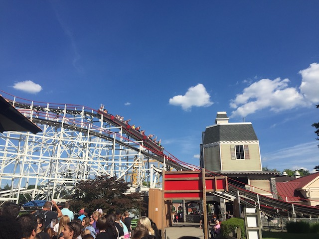
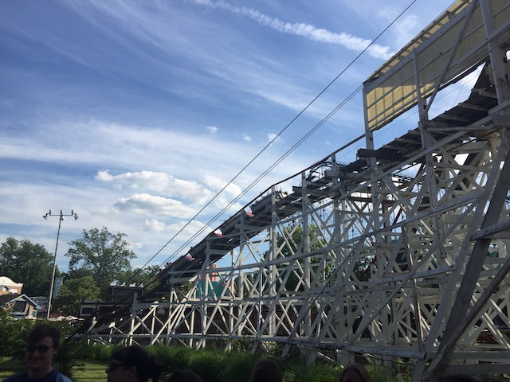
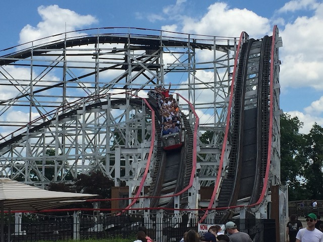
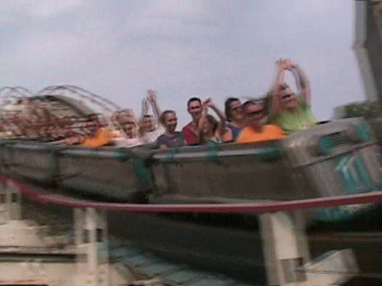
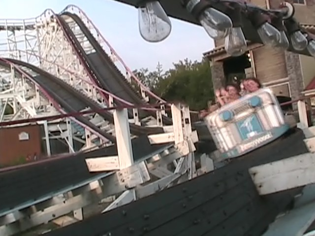

| |
Thunderbolt Review

We're here at Kennywood. Today's ride we'll be reviewing is Thunderbolt. However, like many rides at Kennywood, it has an interesting history that I feel like explaining in this review before talking about the ride. It first opened up as Pippin in 1924. It lived a very long time as Pippen and was fun and all. However, in 1968, Kennywood decided that Pippen wasn't good enough for their park or something like that. So rather than tearing it down, they simply extended the ride and gave it a fresh new name, and whala!!! Now we have the Thunderbolt that we all know about today. And one thing you need to know about Thunderbolt before riding it today. Thunderbolt has a no single riders line policy. You MUST have a partner in order to ride the Thunderbolt. If you do not have a partner, Kennywood will help you find one (to ride Thunderbolt with). Now that we have our partner, we hop in the trains, pull down the buzz bar, buckle the seatbelt and we're off. Now Thunderbolt is not your average wooden coaster. First off, you drop right out of the station and the ride begins right then and there. No lifthill for us. We'll get there later in the ride. For now, DROP OUT OF THE STATION!!!!! We actually get some speed from this drop. After passing under Phantom's Revenge, we then rise up a hill. We then head into the turn around. You actually get some really cool angles of Phantom's Revenge through this turnaround. You also get a great view of shrubbary. Turnarounds over. We then head down another dip to gain some more speed until we rise up a small hill that turns into the lifthill. Now this is actually one of my favorite parts of the ride. This is the underrated moment on Thunderbolt. That transition from the hill to the lifthill actually provides you with a nice pop of ejector air that totally caught me by suprise. It's like saying "Yeah, lifthills are boring, so here's a pop of airtime to satisfy you until you get to the top." Seriously. That part of the ride is totally awesome and definetly needs more love. After climbing the lifthill, we roll around a turn and head straight for the part that you all know about. The turns. After you drop and gain some speed, but then you hit the turns. SLAM!!! You can now see why you would need a partner to ride this ride. These Laterals are insane. After those insane laterals, we head up another hill where we get some more laterals before getting more laterals as we twist back down. You then gain more laterals as you head over another hill, then after that, SLAM!!!!! You're back in the bowl gaining even more insane laterals. But calm down. You then rise up a hill and head straight into the mid course brakes. We then roll around a turn and head down a big drop. This is like that drop out of the station, only bigger. This lets us gain a lot of speed. We then slice right under Phantom's Revenge as we rise up into another turnaround. Ok, that was pretty crazy. But it's gonna get crazier. Right after this turnaround, here comes the biggest drop on the entire ride. After all that we've been through, it's gonna seem HUGE!!! Even if it's really not that big, it still feels really fast and gives us a lot of speed. So now that we have this sh*tload of speed, what comes next? The brake run. We just rise up into the brake run. LAME!!! Seriously, what a waste of speed. But oh well. Thunderbolt is a very interesting wooden coaster. It's really not like any other wooden coaster in the world. If you are a fan of laterals, then you will LOVE Thunderbolt. However, if you're not, you probably won't. But either way, this is a very good woodie and I would definetly recommend it to anyone coming to Kennywood. It's a one of a kind ride at a one of a kind park.
8/10
Location: Kennywood
Pippen opened in 1924
Pippen got remodled into Thunderbolt in 1968
Built by: Andy Vettel
Last Ridden: June 24, 2021
Thunderbolt Photos








Home
|